Hearty Kitchen is a Bay Area meal-kit service built around wellness and home cooking. I designed its driver-facing app, the mobile experience independent drivers use to pick up, route, deliver, and get paid. The goal: make a high-pressure job feel calm, clear, and trustworthy.
Mobile UI Service Design Usability Testing
My Role
Driver App · Mobile
Team
4 (I owned the driver app)
Result
SUS 72.5 (vs 68)
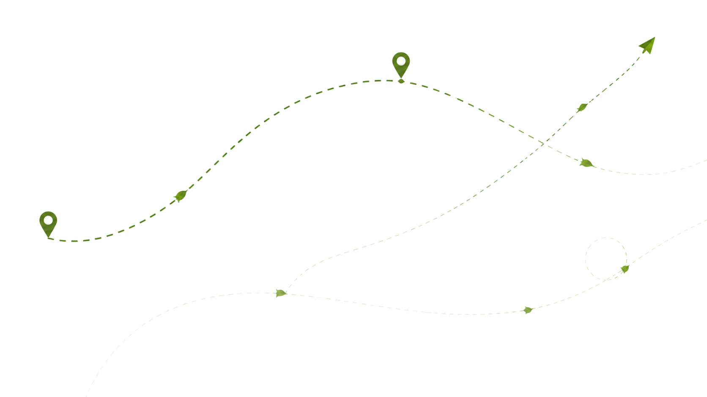
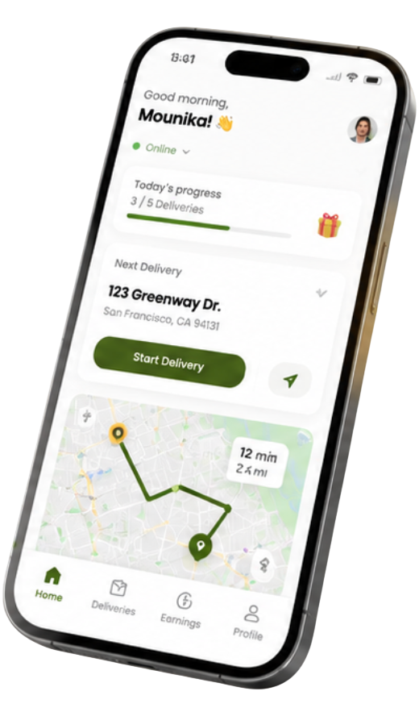
$
Earnings Today$72.50
★
Driver Rating4.9
✓
Delivery Completed+$8.00
♥
Tip Received+$5.00
★★★★★
"Good service!"
The product.
Hearty Kitchen is a Bay Area meal-kit service built around wellness and home cooking. A reliable delivery network is what makes the promise real, so the driver app had to be as considered as the consumer one.
North Star Vision.
Hearty Kitchen brings nourishing, intentional meals back to Bay Area communities, making wellness through cooking accessible and sustainable.
Tagline Where Flavor Meets Wellbeing
My role.
This was a four-person graduate team project. We split the platform; here's exactly what was mine.
The team project
Hearty Kitchen, designed end-to-end across a consumer app, a service-provider (driver) app, and a web admin portal. Research and brand were shared; each surface had an owner.
What I owned
The driver / service-provider app: the driver persona synthesis, the full delivery flow, the visual system for the driver portal, and the usability test and iterations on it.
Who it's for.
Independent drivers who deliver Hearty Kitchen meal kits from hub to customer, often juggling multiple stops under time pressure. Four capabilities shaped every screen.
Real-time delivery management
Multi-stop route optimization
Earnings transparency
In-app exception handling
User journey map.
Before touching a single screen, I mapped a driver's full shift, from going online to cashing out, charting their actions, touchpoints, and emotional highs and lows across each delivery. The stress points, unclear routing, no way to report a problem, and opaque pay, became the opportunities that shaped the app.
The driver's shift mapped end to end. The emotional curve pinpoints where confidence dips, and those dips are exactly where the design needed to step in.
Designing the driver app.
With the journey mapped, I worked out how the driver app fits into Hearty Kitchen's wider service, how each moment should be delivered, and how the hardest edge cases should flow, then shaped it all into screens.
Service Blueprint: the end-to-end service across five stages, mapping the customer's actions against the frontstage, backstage, and supporting systems that deliver each one.
Service hardware touchpoints.
Service Hardware Touchpoints: the physical devices and objects, from the driver's phone to the packaging at the doorstep, that people interact with across the service.
Hearty Kitchen roadmap.
Product Roadmap: how the driver app rolls out over time, phasing the work from core delivery flows through to the features that follow.
Budget and scaling strategy.
Budget Plan: the cost and resource allocation behind the build, mapping spend against each stage of the roadmap.
Service provider app.
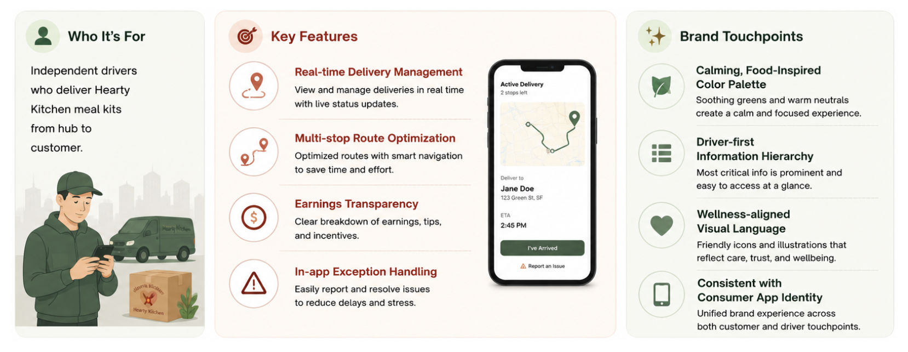
Service Provider App: the staff-facing side of the service that works alongside the driver app to keep each order moving.
Role of the delivery app in the service ecosystem.
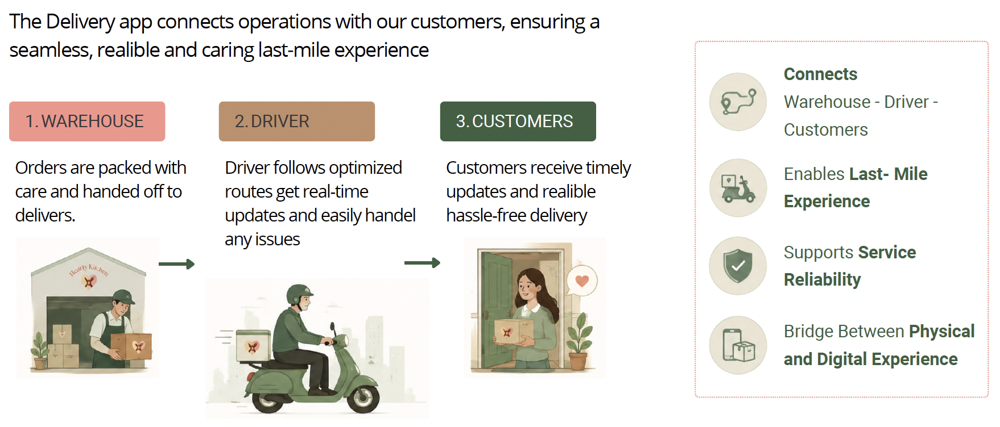
Role of the Delivery App: where the driver app sits in the wider ecosystem and how it connects customers, staff, and the wider service.
Key pain points from the driver perspective.
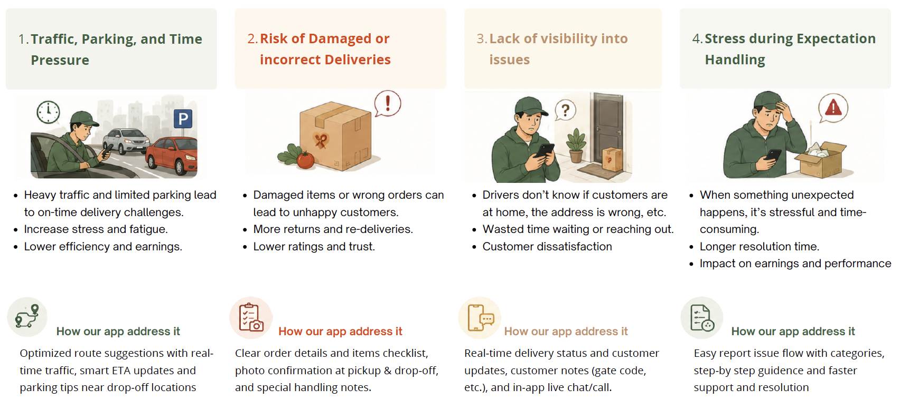
Key Pain Points: the friction drivers hit across a shift, unclear routing, no way to report a problem, and opaque pay, that the design set out to fix.
The delivery flow.
Drivers are guided through each step, navigation, real-time tracking, arrival, and final confirmation, with clear actions, delivery verification, and instant updates to earnings and progress.
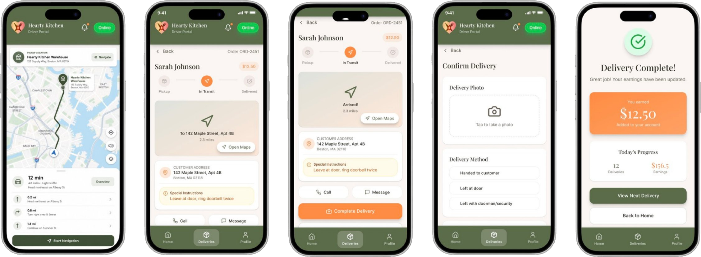
Navigation → In Transit → Arrived → Confirm Delivery (photo proof) → Order Complete, with earnings updating live.
AI reroute.
When traffic builds on the current route, the app uses real-time conditions to find a faster path and surfaces it to the driver, comparing the AI-recommended route against the original with clear time savings and ETA, so drivers stay on time without second-guessing.
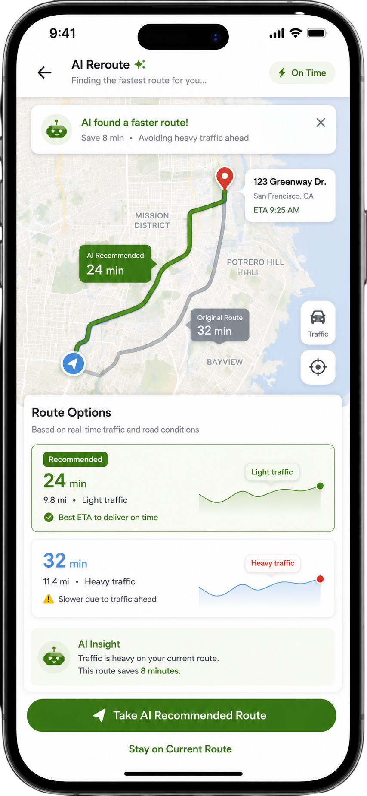
AI finds a faster route, saving 8 minutes by avoiding heavy traffic, and shows why, with the best ETA to deliver on time.
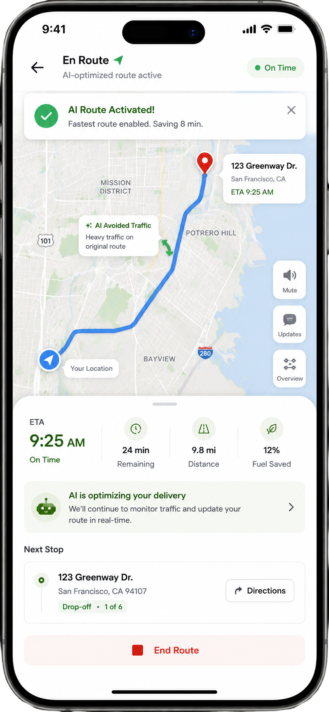
One tap takes the AI-recommended route; the driver stays on time with live traffic guiding each turn.
Explore the driver's profile.
Beyond the delivery flow, drivers manage their whole work life in one place, their profile and vehicle details, earnings history, notification preferences, and payout methods, all in the same calm, legible system.
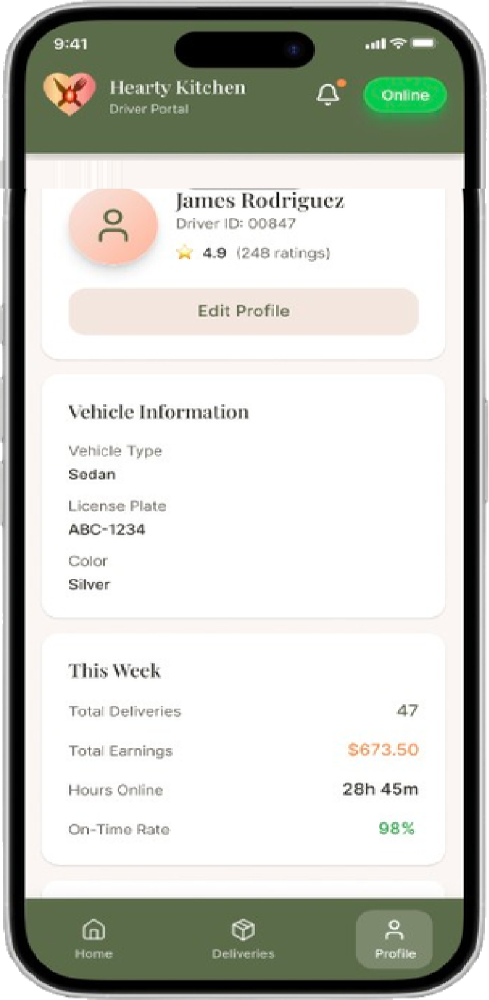
Profile: rating, vehicle details, and a weekly snapshot of deliveries, earnings, and on-time rate.
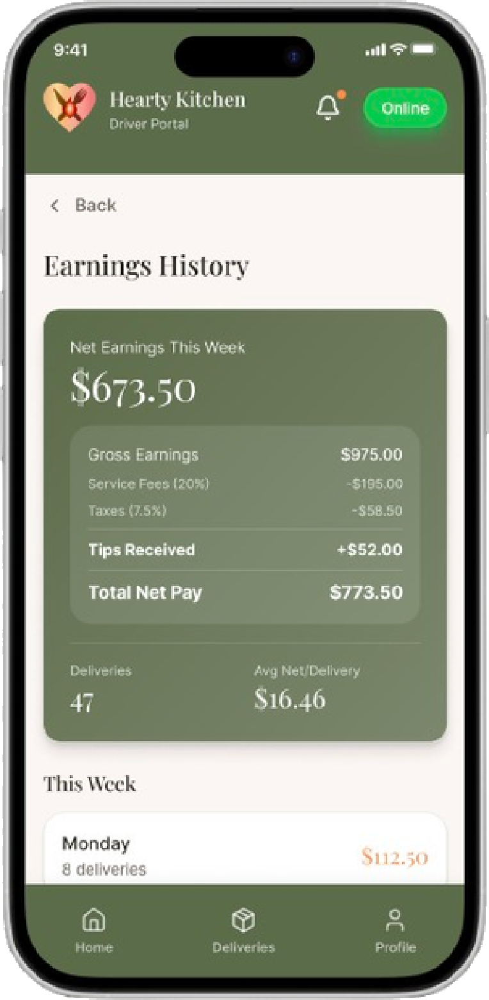
Earnings: honest net pay, with gross, fees, taxes, and tips broken out day by day.
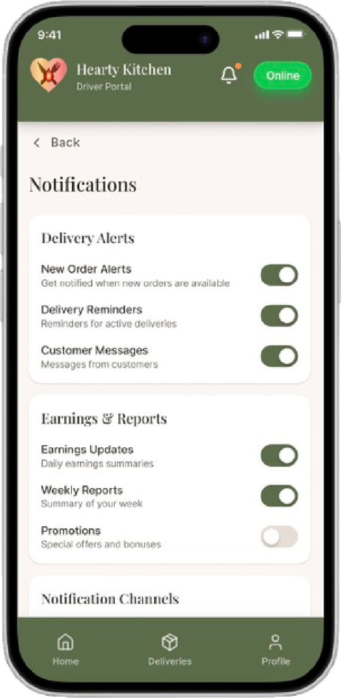
Notifications: granular control over delivery alerts, earnings reports, and channels.
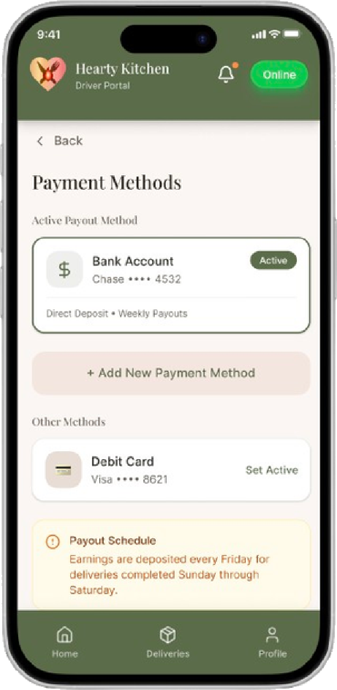
Payments: manage payout methods and see exactly when earnings land each week.
Testing it with drivers.
Three participants ran 8 core tasks: going online, viewing the optimized route, accepting an order, confirming pickup, contacting the customer, reporting a problem, completing with photo proof, and checking earnings.
72.5
average SUS score, above the 68 industry benchmark
67%
success on "report a problem", the clear bottleneck
2 / 8
tasks (route view & problem report) drove most misclicks
Task
Success
Time
Misclicks
1 · Find today's deliveries
100%
19s
1
2 · View optimized route
100%
1m 4s
6
3 · Review & accept order
100%
35s
1
4 · Confirm pickup
100%
16s
0
5 · Contact customer
100%
8s
0
6 · Report a problem
67%
1m 47s
6
7 · Complete with photo proof
100%
31s
1
8 · Check earnings breakdown
100%
23s
1
What I changed.
The test pointed at three fixes, each tied to a number, each shipped into the design.
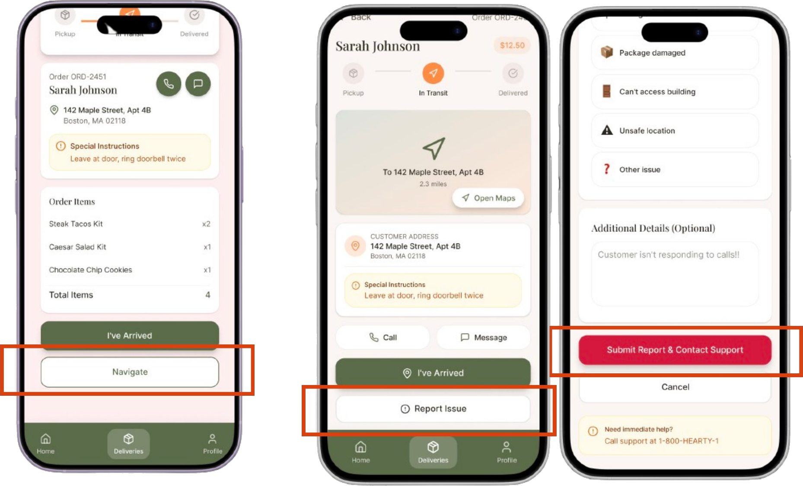
Before → After
Made problem-reporting reachable
The active-delivery screen had no clear way to report a problem, so a "customer not home" scenario tripped up two of three drivers, one failed it outright. I added a dedicated Report Issue button on the In-Transit screen and a structured report flow, giving drivers fast escalation in stressful moments.
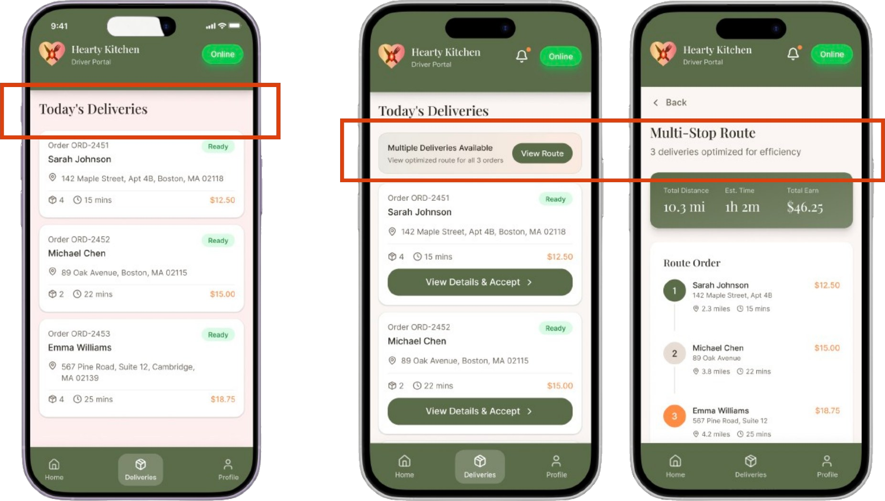
Before → After
Surfaced the optimized route
The multi-stop route was the product's smartest feature, but drivers overlooked it, one took over a minute to find it. I gave it a solid high-contrast button and a bolder label, making the multi-stop route immediately recognizable from the deliveries list.
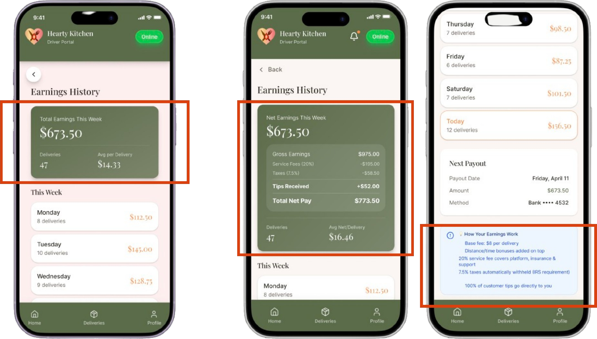
Before → After
Made earnings honest
The original only showed gross pay, drivers told us competitor apps "surprise you at tax time." I added a full breakdown (gross, service fee, taxes, tips, net pay) plus next-payout details, so drivers can make an informed call before accepting a delivery. Participants named transparency their top trust factor.
Takeaways.
Designing for drivers meant designing for stress: one-handed, time-boxed, high-stakes. The biggest wins weren't new features, they were making the right action findable at the right moment, and being honest about money. Testing turned three vague hunches into three specific, defensible changes.
Design system.
The driver app pairs Playfair Display for headings with Inter for body text, over a calm, food-inspired palette: one warm olive anchor, fresh greens for live status, and honest accents for money and alerts. A single type scale and a small component set keep every screen consistent.
Typography.
DisplayPlayfair Display Black · 64 / 72
Hearty Kitchen
Heading 1Playfair Display Bold · 44 / 52
Deliver with confidence
Heading 2Playfair Display SemiBold · 32 / 40
Your route, optimized
Heading 3Playfair Display SemiBold · 22 / 30
Report an issue
BodyInter Regular · 16 / 26
Every delivery is one clear action at a time: pick up, navigate, confirm, and watch your earnings update the moment the drop is done.
Small / CaptionInter Regular · 13 / 20
Net pay shown after service fee, taxes, and tips, so there are no surprises at payout.
Colours.
Olive (Primary)#4F5D39
Deep Olive#3B472A
Fresh Green (Status)#3F9D4A
Orange (Accent)#E8743B
Gold (Rating)#F5B301
Sage Tint#EEF1E6
Cream#F4F2EA
Ink#23281C
Slate#6B6F60
Components.
A shared library of the pieces that repeat across the app, each with a rule for when to use it, so every screen is assembled the same way.
Buttons
One olive primary per screen for the main action; a secondary beside it; disabled greys out and loses the fill.
Status pills
OnlineIn TransitDelivered
Live delivery state at a glance: green for online, orange while in transit, olive once a stop is complete.
Delivery card
📍
Stop 2 · 1420 Fillmore StETA 11 min · 3.2 mi
$14.50
The workhorse card for the deliveries list: stop, address, ETA and distance, and the pay for that drop.
Earnings stat
Net earnings this week$673.50
The headline money figure, always shown as net pay so drivers see what actually lands.
Toggles
New order alerts
Weekly reports
Fill green when on. Used across notification settings so drivers control what pings them mid-shift.
Progress
Stop 2 of 5 · 40%
Shows how far through the multi-stop route the driver is, so a long shift feels finishable.
More work
See the rest of the portfolio
Two more projects: a B2C web platform and a mobile experience app.